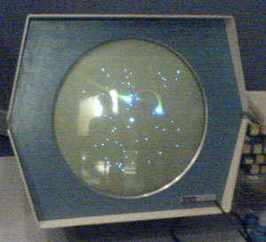
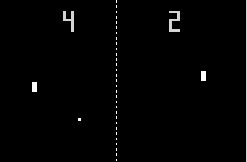
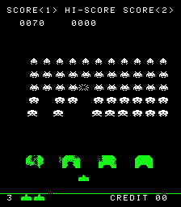
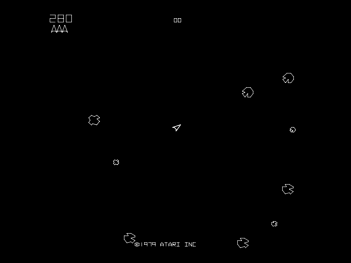
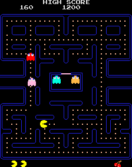
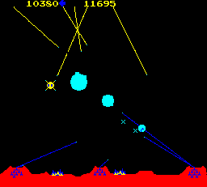
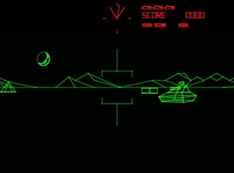
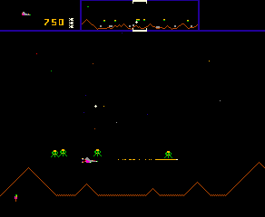

The lovely Susan and I managed to nip into the
Game On
exhibit at the
Science Museum,
back in February,
just before it ended. I was so glad that we did - what a delight it was!
I couldn't believe the assemblage of classic hardware they had packed
into those rooms, all working and playable.
I wanted to write a lovingly detailed description of all the games we
found therein, wallowing in nostalgia and techno-fetishism. But in the 3
months since I first wrote the above paragraph, I've never got around to
completing it, so the following annotated list of my personal highlights
from the first section will have to suffice for the moment, though it is
naught but a gnarled stub of the monument I had envisaged.
Spacewar! (MIT, 1962)
Spacewar! on the PDP-1's oscilloscope-like display.
Not just the strongest entry for the hotly-contested title of 'first
ever computer game', but actually by far and away the most fun of any
of the contenders, featuring a depth of gameplay that wouldn't be
matched until Defender, nearly 20 years later. A two player deep-space
duel with Newtonian physics, which remains surprisingly playable even
today. About 200 hours of work went into writing the initial version,
which was then refined with touches such as a background starfield which
maps every star from the real night sky of fifth magnitude or brighter,
precessing slowly to display all the well-known constellations as the
game progresses. The Game-On exhibit had the original hardware on show,
a defunct PDP-1 the size of a Hummer, which ran at 0.2MHz. In an
inadvertent demonstration of Moore's Law, a playable simulacrum of the
game itself was provided on a six-inch Vectrex from the '80s.
Pong (Atari, 1972)

Nolan Bushnell founds Atari, and when the local bar reports his first machine
to be 'broken', it turns out to be due to its innards overflowing with
quarters. Before my time, this one, but a clear indicator of things to
come. Interestingly, many of the subsequent incarnations of Pong, for
home consoles and the like, didn't play as well as this original model,
since it was constructed using dedicated analog electronics, which
enabled a rapid framerate, and commensurate fluidity of gameplay, which
could not be matched by software implementations for years to come.
Space Invaders (Taito, 1978)

Triggered coin shortages in Japan, prompting the government to quadruple the
supply of 1 Yen coins. To this day the cultural resonance lives on, as
the French urban street artist 'Invader' is still placing his discreet
mosaics in public places around the world, returning only when local
authorities scrape them off, to put a small white number where the
invader used to be. I was never quite as massively captivated by it as
by other games, although no doubt my parents would protest that was only
because 10p coins were in such short supply for my seven-year old self.
I however, shall stick to my story, that perhaps the blatantly
predictable gameplay proved fractionally less of a lure than other,
subsequent titles that left a little more to the imagination.
Asteroids (Atari, 1979)

A clear descendant of the original Spacewar, featuring deep-space based
Newtonian combat rendered with rotational vector graphics which afford
an austere Kubrickian elegance to the presentation. In common with many
games of this vintage, the terrific bass thumps and distinctive chirps
and warbles of the sound effects were produced using custom analog
electronics, specifically designed for the game. The combination is
dynamite, and Asteroids went on to become Atari's greatest selling game
of all time, tempting ten year olds such as myself into countless hours
spent lurking around the screen edges, dreaming of a high-stakes
lifestyle out beyond the Kuiper belt in a singleship, hunting down those
high-scoring UFOs.
Pac Man (Namco, 1979)

"If computer games affected our behaviour, then by now there'd be a
generation that had grown up running around in darkened rooms, munching
magic pills and listening to repetitive electronic music - oh, hang on."
Missile Command (Atari, 1980)

The game's original design tasked the player with the defence of American
west coast cities, from San Diego to San Francisco, while unending waves
of nukes rained down like fireflies. Cold war tensions made that
scenario a little too chilling for comfort, so the game was re-cast with
a science-fiction setting. The result, with immaculate use of a
then-novel trackball controller, and seismic sound effects, constituted
a classic that remained a prominent and profitable entry in arcades for
fifteen years after its release, and remains an inspiration for modern
games such as Defcon (PC, 2006).
Battlezone (Atari, 1980)

A trailblazing first-person perspective 3D virtual reality, and famously
adapted by the US Army to train gunnery crews of the Bradley Fighting
Vehicle. Myths surrounding the game abounded, of increasingly esoteric
enemies that could be encountered with prolonged play, of continued
progress towards the distant mountains leading to the exploration of
exotic terrain, and the discovery of factories which were producing the
endless supply of enemy tanks rolling your way. In reality, the hardware
was hard-pressed to perform the required 3D calculations for even the
simple surroundings presented at the start of the game, and there was no
more content than could be seen within five minutes of that. And yet,
the stark scenarios it presented blossomed within the imagination of my
young self, offering possibilities for the presentation of limitless
worlds, to anyone who could bring with them but a modicum of
willing-suspension.
Defender (Williams, 1980)

While its contemporaries could often be mastered by careful, methodical
play, memorising patterns, and the occasional bout of dexterity,
Defender proved to be the ultimate test of reactions, spatial
awareness and hand-eye skill. Once underway, the game becomes a non-stop
roller-coaster of pant-wettingly tense action, as your gymnastically
maneuverable craft, spitting pyrotechnic plutonium death, carefully
rescues fragile humanoids from a sky full of of the most fiendish,
purposeful, body-snatching, god-damned alien sons-of-bitches to ever be
rendered in pixel. Clearly the hatred in me lives on.
End of the Early Arcade Scene
For me, Defender marks a watershed in the industry, prior to which games
developers had to go through extraordinary contortions in order to coax
the primitive hardware of the times into producing anything coherent on
the screen at all. As a result, the games of the era were forced to
model simple worlds, depicted using visuals that were highly stylised,
to say the least. To this day I find a kind of beauty in the abstract
minimalism that this required, a kind that, with occasional exceptions,
is missing from games of later generations.
The game developers of the day were more inventors than engineers or
authors. Their creativity was necessarily of a predominantly
left-brained kind, but as is so often the case, in being channeled by
the technical restrictions they faced, that creativity responded by
seeking out nooks and crannies in which to flourish, and then leaping
forth, blossoming in unexpected directions, producing games with rude,
brash exteriors, but nonetheless exuding a rugged and determined charm,
lurching with barely contained excitement from one harebrained idea to
the next.
Defender in many ways marks the culmination of this era. Primary author
Eugene Jarvis' legendary programming efforts wrung incredible results
from the paltry hardware resources at his disposal, while introducing
concepts such as the horizontally-scrolling wraparound landscape, the
tactical awareness granted by the radar, the smart bomb - which
perfectly offset the otherwise ruthlessly difficult play. All of these
would remain staples in the industry for decades to come. Each one,
arguably, an inevitable invention, an idea who's time had come, an mere
incremental development of the exploration of virtual space that nascent
gaming represented. But nonetheless, each one, inarguably, had never
been done before. To bring them all together in a single sustained
creative outburst represented a peak, a marriage of engineering, art,
business and frivolity that had never previously been attempted.
By 1981, just one year after the release of Defender, the hardware
quickly standardised and evolved such that it no longer created such
intrusive restrictions on creativity. The business model had been well
established, the market assuredly huge and growing every year. The risks
and the difficulties overcome, a mass of new game companies moved in,
flooding the market with uninspired, profit-driven efforts and mediocre
imitations. Programmers were relegated to programming, artists and
modellers took over the visuals, and what should have been the central
role, that of game design, fell in the cracks, while the other former
partner in the creative enterprise, the players who had previously
supplied the imagination, were made redundant.
It wasn't all doom and gloom, however (no pun intended.) In the midst of
the impending '80s game boom, there were plenty of gems, once one
filtered through all the dross. I've found this write-up most enjoyable,
so maybe I'll write some more about that next week...